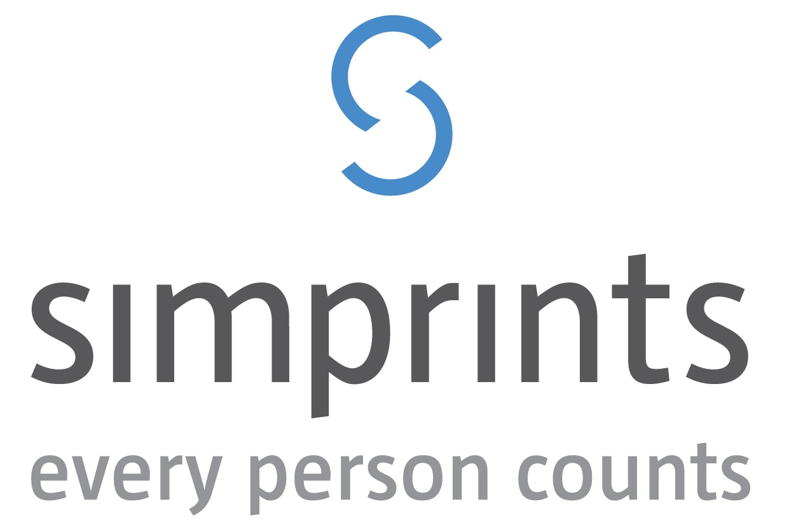

About the cause
Since its launch in 2014, Madanyu has been committed to facilitate computer based education in the most remote settings of the world with the use of low-cost and low-power computing solutions.
Project challenges
Interactive Material Science game.
Materials Science lacks fun games that can be used at secondary schools across the world. We would like to inspire the next generation of designers and engineers for materials with a game that balances materials against performance criteria. The challenge is to come up with a JS game that encourages students to select the best materials to design conventional products such as basketballs, cricket bats, etc. We will provide a list of 100 materials data and an idea on how we visualised the game as starting point, with the expectation that the guys at ChariTech will convert the idea into their own. Interested participants have the opportunity to apply for a paid Summer Internship in Cambridge with our partner Granta Design.
Open source lesson plan system.
A key enabler for Madanyu is to have open-source lesson plans which teachers can use in developing countries in class and jointly with our volunteers can improve on over time. For this we seek a github solution for lesson plans, that hosts and version controls markdown lesson plans and can be shown in full spec via a browser. The challenge is to develop a minimal working solution that takes markdown lesson-plans from github and shows them to teachers and students to interact and help guide their learning in class. We will provide references to existing solutions to kick-start this process. Interested participants are invited to become a volunteer at Madanyu over this Summer and see the solution at schools in developing countries been tested live and further improved.

About the cause
Simprints are building open source software and biometric hardware to empower mobile tools used by researchers, NGOs, and governments fighting poverty around the world.
Project challenges
Data portal
Once in the hands of a frontline worker, Simprints enables real time identification of beneficiaries. However, to truly
maximise our impact we need to put actionable data into the hands of frontline workers, managers, and policy makers to
drive fundamental improvements in the delivery of healthcare, education, and aid distribution. Can you build an easily
extensible data portal that plugs into a Firebase real time database?
Fingerprint extraction
Extraction is the detection of the unique points on a finger, called minutiae. There can be are anywhere between 20-80
minutiae on a finger. Given a training set of fingerprint images, can you build a robust extraction algorithm? How will it
fare against our increasingly difficult test set? Bonus points if you can classify the fingerprint as a loop, whorl or arch.